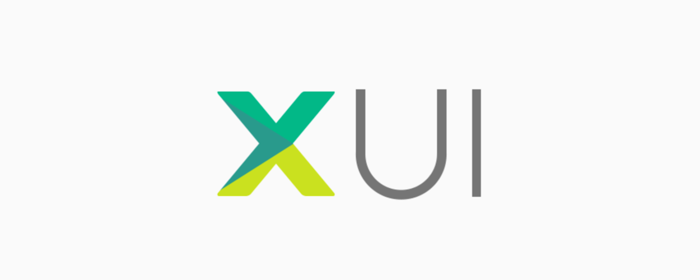
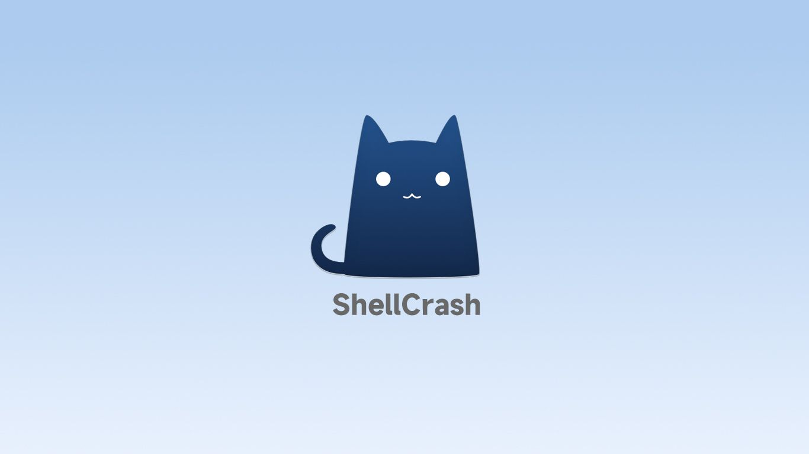

Engineering Notes & Workflows.
Practical documentation across Linux servers, network protocols, and production workflows.

Linux Server Setup & Deployment Guide
Quick provisioning for Debian and Ubuntu servers, essential system tools, Xray panel setup, and daily ops baselines.

Accessing IPv4 from an IPv6-Only VPS: NAT64 & Rollback
Diagnose addressing and routing, separate DNS64 from NAT64 responsibilities, and set up safe verification and rollback.

3X-UI Setup & Automated TLS Upgrade Guide
One-click 3X-UI panel installation, automated TLS certificate issuance, security hardening, and live traffic metrics.

Hysteria 2 Deployment & Network Optimization
End-to-end engineering walkthrough covering server configuration, client setup, UDP throughput tuning, and BBR.

Xiaomi BE6500 Router: Unlock SSH & Install ShellCrash
Unlock SSH access and deploy ShellCrash gateway routing while preserving stock firmware, Mesh, and hardware acceleration.